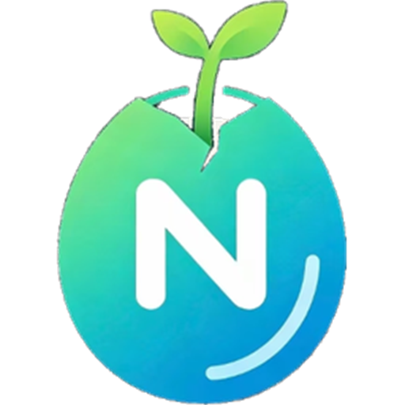

NEXCOREWORK下载手机端
连接你的电脑
安装后用手机软件扫描电脑生成的连接码。文件、模型和任务仍在电脑上执行。
下载 Android 安装包 查看历史版本- 下载并安装 APK，允许浏览器安装未知来源应用。
- 打开 NexcoreWork 手机端，允许相机权限。
- 扫描电脑“手机控制”中生成的连接二维码。
SHA256 2EE0384D40CD84415B431F7633E50F398B4C4F2DA5D6C1C3E2B7905E072285CA
源码仓库保持私有。这个公开仓库只用于发布签名安装包和更新说明。请只从本页面下载。